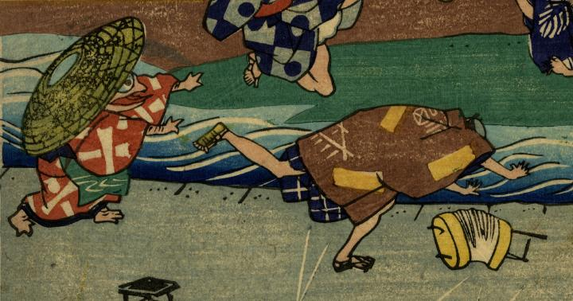

長い舌を出し、男性を襲う一つ目の化物。笠をかぶり、茶色の着物、緑の前掛けをつけている。
出典：親書誌：U426_nichibunken_0272：かつば化くらべ；カッパ バケクラベ／日付：2014／資源識別子：U426_nichibunken_0272_0006_0000
Copyright (c)2010- International Research Center for Japanese Studies, Kyoto, Japan. All rights reserved.